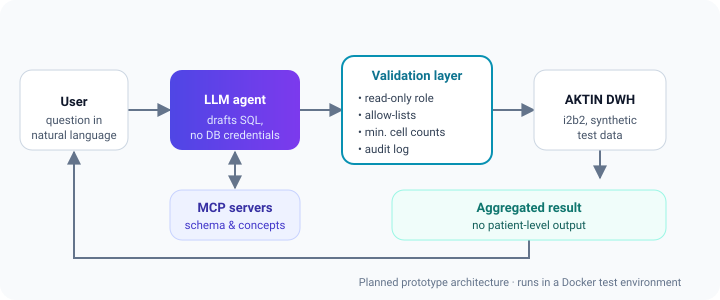

Bachelorarbeit: LLM-Abfrageunterstützung für AKTIN
In ArbeitInstitut für Medizinische Informatik, RWTH Aachen University
Das AKTIN-Notaufnahmeregister (i2b2) in natürlicher Sprache abfragen. Ein LLM-Agent bekommt Schema- und Konzeptwissen über MCP-Server; eine getrennte, deterministische Validierungsschicht prüft jede Abfrage, bevor sie die Datenbank erreicht. Das Modell besitzt nie Zugangsdaten, und es werden nur aggregierte Ergebnisse zurückgegeben.